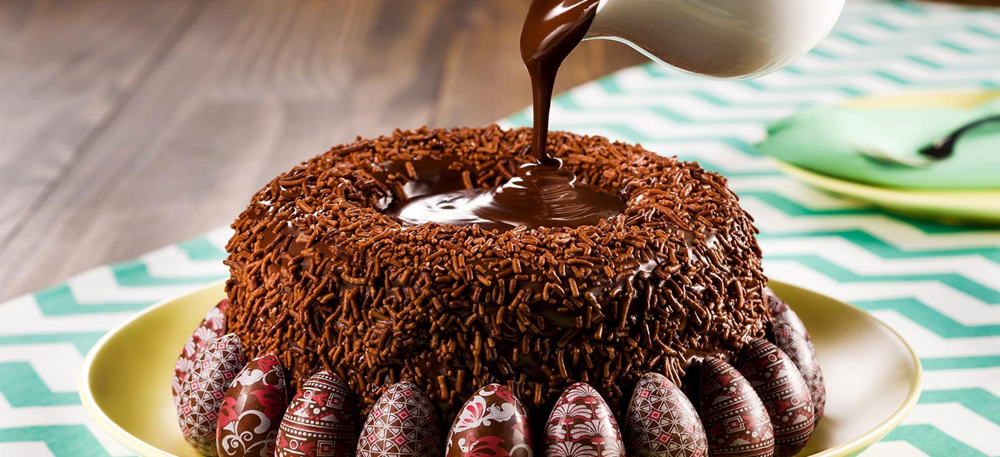

Bolo Vulcão
Total: 85min | Preparação: 20min | Cozimento: 50min | Espera: 10min | Servir: 5min
Ingredientes
Massa
- 100 g de manteiga
- 3 ovos
- 1 e meia xícara (chá) de açúcar
- 1 xícara (chá) de Chocolate em Pó
- 1 xícara (chá) de Leite Líquido NINHO Forti+ Integral
- 1 xícara (chá) de Leite Líquido
- 2 xícaras (chá) de farinha de trigo
- 1 colher (sopa) de fermento em pó
- Meia colher (chá) de bicarbonato de sódio
Cobertura
- 1 Leite MOÇA® (lata ou caixinha) 395g
- 100 g de Chocolate CLASSIC Meio Amargo
- 1 colher (sopa) de manteiga
- 1 Creme de Leite Nestlé Caixinha
-
50 g de chocolate granulado para decorar
- Morango (a gosto)
- Mini Ovos de Chocolate(a gosto)
Modo de preparo
Massa
Em uma batedeira, bata a manteiga, os ovos, o açúcar e o Chocolate em Pó até ficar homogêneo.Desligue a batedeira, junte o Leite, a farinha, o fermento e o bicarbonato e misture bem.
Coloque em uma forma redonda de furo central (23 cm de diâmetro) untada com manteiga e polvilhada com farinha de trigo, e leve ao forno médio-alto (200°C), preaquecido, por cerca de 40 minutos.
Espere amornar e desenforme.
Cobertura
Em uma panela, coloque o Leite MOÇA, o Chocolate NESTLÉ Classic e a manteiga.Misture bem e leve ao fogo médio, por cerca de 8 minutos ou até desgrudar do fundo da panela.
Desligue o fogo, junte o NESTLÉ Creme de Leite e misture bem.
Espere amornar e faça uma camada de brigadeiro em toda volta do bolo e o restante coloque no furo central, de modo a escorrer levemente.
Decore com o granulado, e os demais itens a gosto.